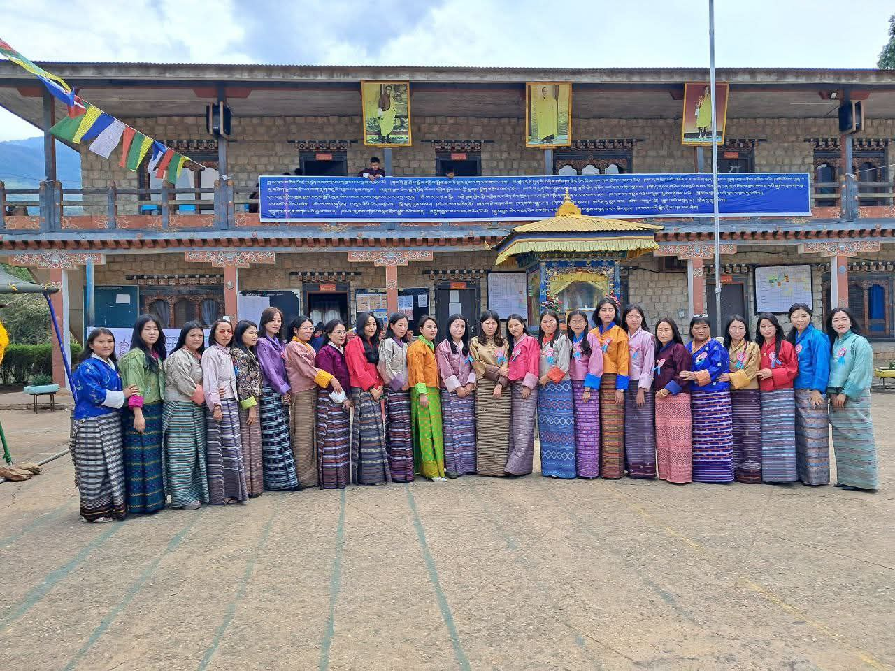
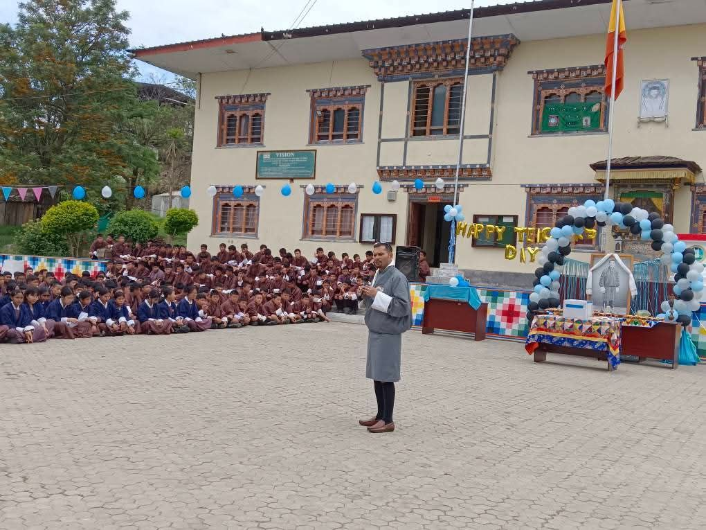
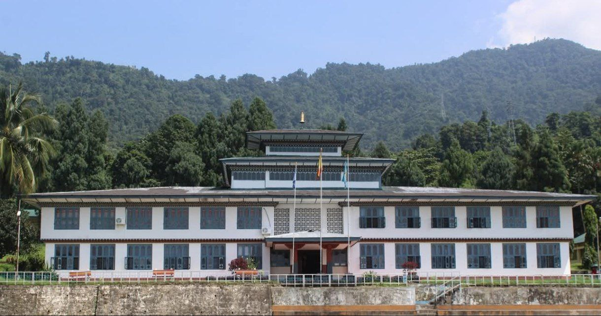

Primary School (PP - 6)
I studied my primary classes at Tencholing Primary School in Wangdue Dzongkhag. Those were fun and curious days where I learned the basics, made my first friends, and discovered my love for learning.

High School (7 - 12)
I studied my higher classes at Bajothang Higher Secondary School, also located in Wangdue. There I met many amazing friends, and I still cherish the friendships I built, which I never imagined would last this long.

College
I am currently in my third year at Samtse College of Education. I am enjoying my stay here, even though the extreme heat is not really my type. I am slowly getting used to it along with the heavy downpours, and I am learning so much both academically and personally.